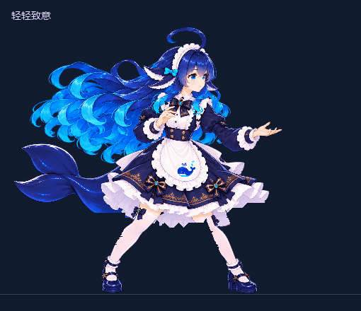
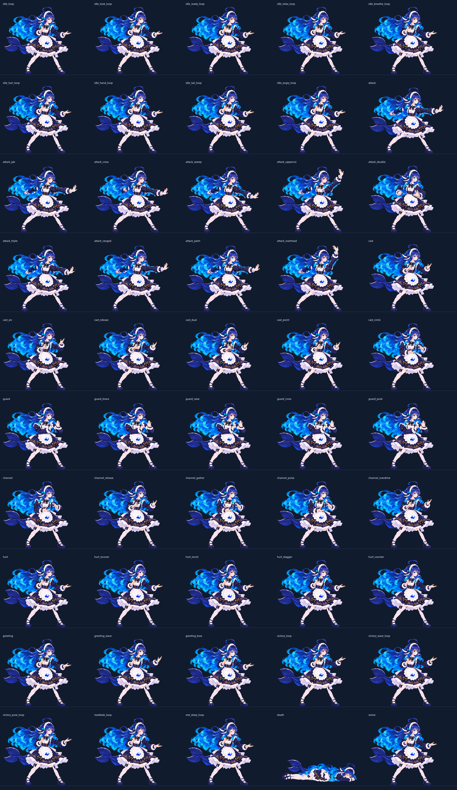
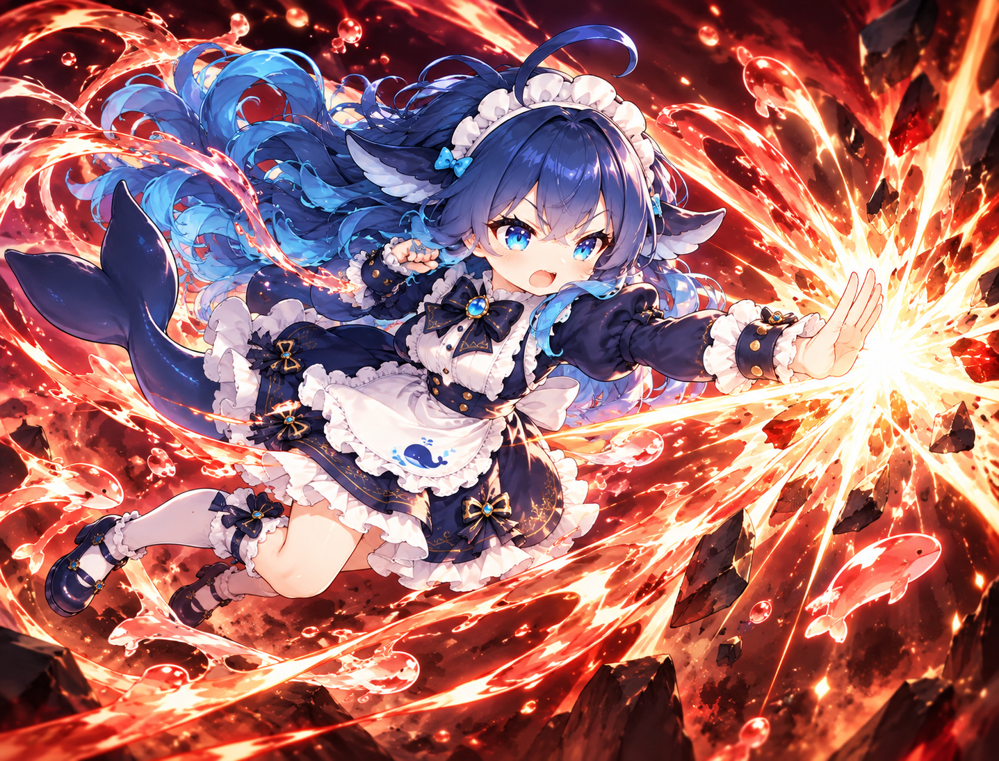
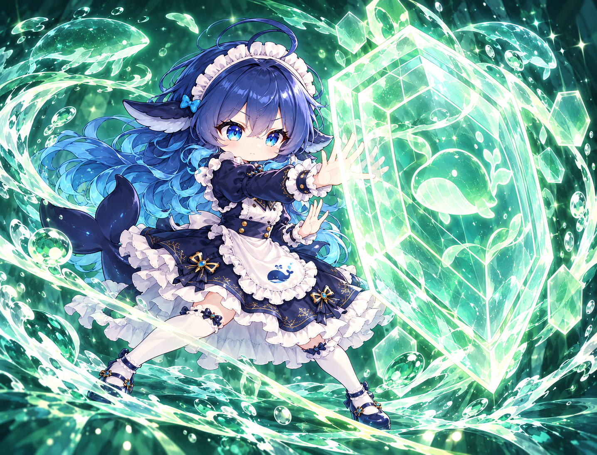

浏览器互动为示意 · 游戏内使用原生 Spine
默认待机沿用指定原图，上层长发与下层卷发错开轻摆，发梢延迟回弹，呆毛独立轻晃，配合呼吸、眨眼和鲸尾跟随。攻击、防御、施法、聚能、受击、致意和庆祝依旧从同一个张掌姿势衔接；死亡趴地，复起回到默认待机。
人物姿态来自原生实际采样，特效为软件近似。预览不是战斗录像或游戏 FPS 测量。




幽蓝穹窗，静谧深海。
已通过原生独立播放、统一动作起止、混合关节、网格和资源检查。完整战斗触发、遮挡、GPU 与实际帧率仍需游戏内验收。未自动部署。